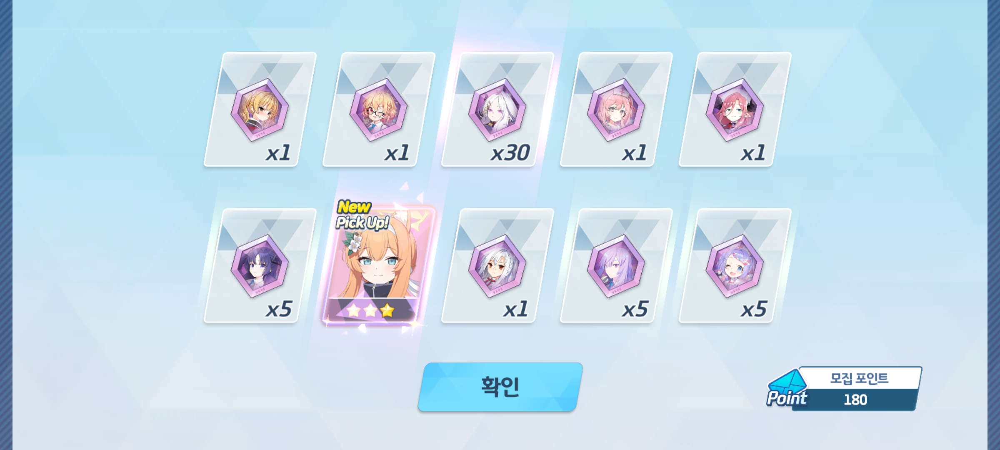

실습학교의 2학년 6반 여러분 안녕하십니까. 저는 수학과 교육실습을 받으러 왔고 여러분 반을 맡게 된 교육실습생입니다. 이곳은 제가 HTML을 연습할 겸 공부한 수학 내용을 기록하려고 만든 곳인데 노트를 다시 사용하게 되면서 버려지다가 이렇게 사용하게 되었습니다. 항상 그렇지만 몇 달 전에 쓴 코드와 홈페이지 구조를 이해하는 것은 어렵네요.
지금까지 여러분의 적극적인 수업 참여 덕에 저와 그 외 실습생 역시 현장에서 좋은 경험을 만들었습니다. 사실 이전까지는 고등학생을 만나는 일이 없다 보니 평소 학교 강의에서 수업 실연을 했을 때 학습량과 난도 조절에 실패했다는 평가를 많이 받았었는데 이번 실습 기간 동안 수업 지도를 통해 이것들을 결정할 때 참고할 많은 정보를 얻게 되었습니다. 4주 동안이었지만 얼굴이 익숙해질 때 이렇게 헤어지게 되어 아쉽게 되었습니다. 사람을 만나는 일이 드물어서 이런 식의 이별은 아직도 익숙하지가 않네요.
수요일부터 수학여행이 있으니 즐겁게 다녀오시길 바라겠습니다. 그동안 저와 어울려주셔서 감사했습니다.

(+)
-
???: 미카 비틱치시길


 용하야 이게 게임이냐?
용하야 이게 게임이냐?